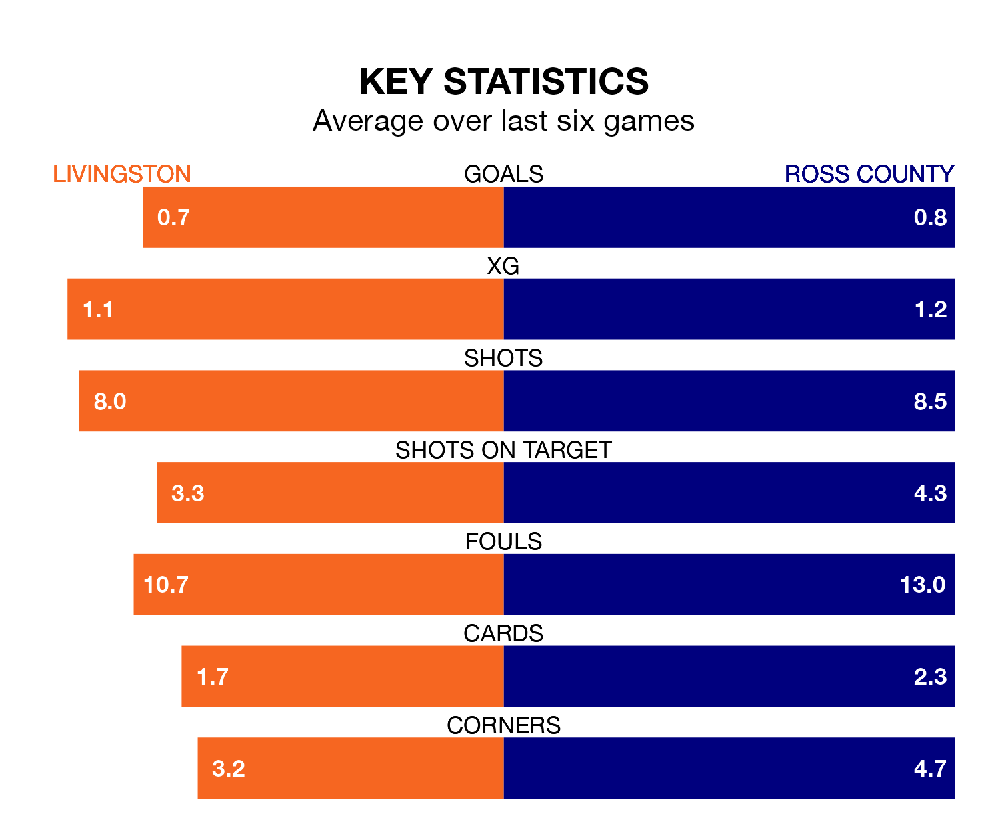

Tuesday's late match at the Tony Macaroni Arena sees the league's two bottom sides face each other, as rock-bottom Livingston host Ross County.
Livingston have picked up 12 points from their first 12 Premiership games, with two wins and six draws.
That is six points less than the Staggies have collected, having won four and drawn six.
Livingston are in terrible form in Premiership, with no wins and a draw from their last six games.
With a win and a draw over that period, Ross's form is better – they have taken four points from 18, compared to the hosts' one.
In the last 10 years, Livingston and Ross have played each other on 16 occasions. Livingston won nine of them, Ross three, and they drew four times.
On average, Livingston scored 1.6 goals and the Staggies 0.9 in those matches.
Their last meeting was on September 16, when they played out a 1-1 draw.
With 13 goals in 22 games so far this season, Livingston are the league's lowest scorers with 0.6 goals per game. And they are conceding more than average, letting in 36 goals at a rate of 1.6 per game.
County are also below average scorers, with 0.8 goals per game, compared to a league average of 1.3. They have conceded 1.5 goals per game.
Livingston's last match was on Saturday, a 4-1 loss against Dundee, with Tete Yengi getting the goal for Livingston.
Ross lost 1-0 against Celtic last time out, also on Saturday.
Tuesday's match will be refereed by Alan James Muir, who has taken charge of six Premiership games so far this season, issuing one red card and booking 21 players. He has awarded one penalty.
The last Livingston game Muir refereed was a 1-0 away loss to Dundee on November 5. His last Ross match was their 2-2 draw away at Hearts on December 30.
Updated: 13:20 (UTC), 29/01/24